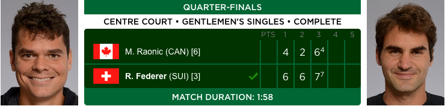

Esta página contém um resumo da campanha do Roger Federer na conquista do título de 2017.
Foi criado por um fã para o projeto inicial de criação de páginas HTML no
Udacity.

Quartas - M. Raonic
Quartas contra Milos Raonic. Jogo perigoso, já que Raonic havia vencido no ano anterior.
Federer dominou desde o início.
6/4 6/2 e um último set mais disputado, vencido apenas no tie-break(4).